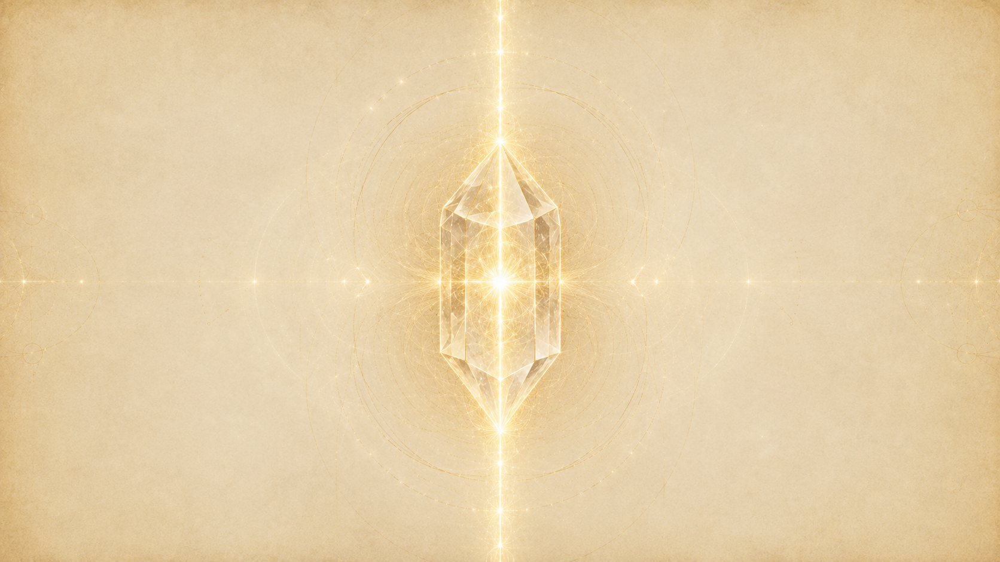
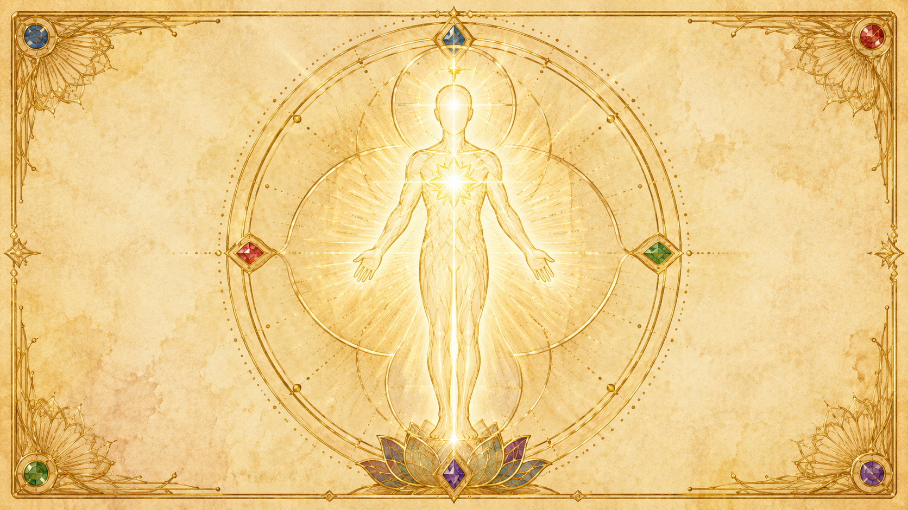
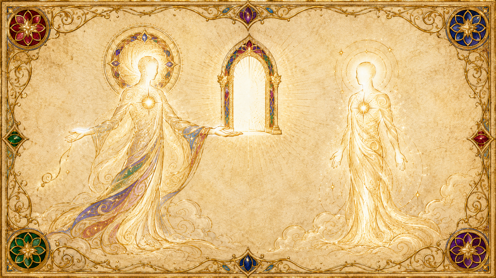
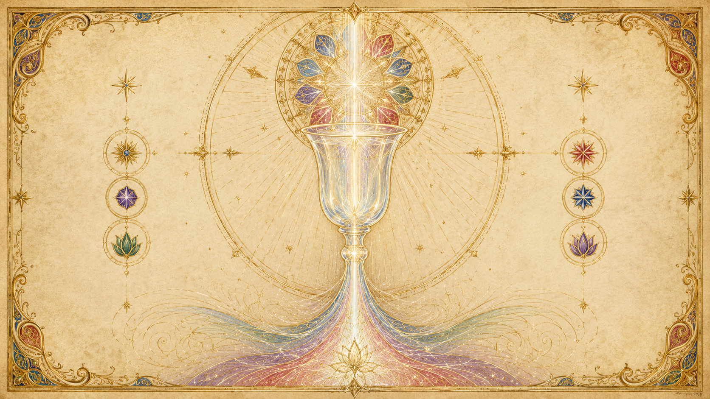

療癒者不療癒:他只是一個催化劑
「療癒者並不療癒。被結晶化的療癒者,是智能能量的一條管道——它提供一個機會,讓一個存有得以療癒它自己。」

整章最該先記住的一句,出自第66場。提問者想弄清楚療癒到底怎麼運作,Ra 把話講得毫不含糊:「療癒者並不療癒。被結晶化的療癒者,是智能能量的一條管道,它提供一個機會,讓一個存有可以療癒它自己。」療癒者的角色,從頭到尾都只是「催化劑」、只是「管道」,而不是施作者。真正讓療癒發生的力量,落在被療癒者那一邊。
Ra 在同一場接著澄清一個關鍵:自我療癒與「被療癒者協助」的療癒,在本質上「沒有差別」——只要這位療癒者僅僅去接近那些事先提出請求的人。換句話說,療癒者所做的,是把一個機會擺到對方面前,至於這機會被不被接受,決定權完全不在療癒者手上。Ra 說,療癒者提供的是「重新對齊、或協助重新對齊各能量中心」的機會;尋求者可以藉此「接受一個關於自我的新視角、一種能量流入模式的全新排列」。但祂緊接著補上那句最要緊的話:「若這個存有……想要繼續停留在那個看似需要被療癒的扭曲組態裡,它就會這麼做。」
正因如此,Ra 說被結晶化的療癒者「沒有意志」。它「提供一個機會,卻不執著於結果,因為它清楚知道萬物為一」。療癒者一旦對「對方非好起來不可」生出執著,那就不再是純淨的管道了。第17場給了療癒一個或許最精煉的定義:「真正的療癒,僅僅是自我的輻射,造就出一種環境,在其中一個催化劑得以發生——而這個催化劑,啟動了自我對自我的認出:認出自我那自我療癒的性質。」療癒者做的,是用自己的存在輻射出一個場域,讓對方在裡面想起自己本來就能自我療癒。
療癒為何發生:複合體想起「沒有不完美」
「當一個心/身/靈複合體在它自身深處認出『一的法則』時,療癒就發生了——也就是說,認出:沒有不和諧、沒有不完美;一切都是完整、整全而圓滿的。」
那麼,療癒「成功」的那一刻,到底發生了什麼?第4場給了最根本的答案。Ra 說:「當一個心/身/靈複合體在它自身深處認出『一的法則』時,療癒就發生了——也就是說,認出:沒有不和諧、沒有不完美;一切都是完整、整全而圓滿的。」療癒不是把一個壞掉的東西修好,而是這個複合體「想起」自己從來就不曾真的破損。疾病是一個暫時的扭曲;療癒是扭曲在「一」的覺知裡溶解。

阻塞發生在哪一層,每個人不同
第23場,提問者問金字塔療癒是不是主要在療癒心智。Ra 說「部分正確」,並指出有效的療癒需要「把流入的能量,不帶顯著扭曲地,漏斗般導入靈性複合體,再進入心智之樹」。祂強調:阻擋能量流動的「阻塞」位置因人而異——可能卡在靈性與心智之間、可能卡在心智與身體之間、也可能來自純粹的身體創傷。所以療癒者必須先「啟動靈性管道(或說靈性梭子)的感知」,接著才能針對個別的阻塞下手,無論阻塞發生在哪一點。
自我療癒:認出「內在安歇的智能無限」
第12場,提問者問這些存有療癒自己身體病痛「有沒有最好的方法」。Ra 說,自我療癒透過「認出那安歇於內在的智能無限」而發生;但對於身體上尚未完美平衡的人,阻塞會擋住這道流。祂以卡拉為例,點出兩個典型阻塞:其一是靛藍光(松果體能量中心)的阻塞——這個中心若無阻塞,「這些能量會傾瀉、奔流而下,進入心/身/靈複合體,逐刻逐刻地完善」其健康;其二是綠光(心輪)的扭曲——因強烈的服務他人取向而過度敞開,使存有「不顧自身儲備地耗盡自己」。Ra 點出根因:「對自身不值得的信念」會擋住智能能量的流動;而解方,是在謙遜的扭曲中練習一份「平靜的了悟」——了悟到「這個存有與造物者是一體的,因此是被完善的,而非分離的」。
第17場補上一個重點:療癒能力並非高密度的專利。提問者問,既然拿撒勒的耶穌是第四密度、而今天地球上也有來自五、六密度的流浪者,耶穌憑什麼是那麼好的療癒者?Ra 回答,療癒者可以來自第三到第七密度的任一密度,只要它具備「靈的意識」;關鍵在於向智能無限的「智能能量流入」敞開自己。療癒能力不取決於密度高低,而取決於是否達到一種整合的心/身/靈和諧,讓存有得以觸及智能無限。
Ra 給療癒者的訓練:心智、身體、靈性三領域
第4場,Ra 把療癒者的養成拆成三個領域的鍛鍊(disciplines)。這三者不是並列的技巧清單,而是一條由下而上、層層相連的整合路徑。
第一領域:心智——「心智必須被自己認識」
Ra 說,第一個領域是心智的鍛鍊,而這「也許是療癒工作中要求最高的一部分」。它的目標是:「心智必須被它自己認識。」第5場進一步給出方法。提問者問,要成為有效的療癒者,「第一步應該完成什麼」。Ra 說,三項教導/學習中的第一項是心智工作,而最基礎的要求是:「心智必須像一扇門那樣被打開。鑰匙是寂靜。」接著祂列出幾項鍛鍊:
第一項鍛鍊(平衡):「凡你在心智中找到耐心之處,你必須有意識地找出對應的不耐;反之亦然。」也就是把自己身上每一個正向與負向的電荷,逐一找出、彼此平衡。第二項鍛鍊(接納):「對一個處於物質意識中、具有極性的存有而言,在自身屬性裡挑挑揀揀,並不是它該做的事」——要接納自身的整全,不偏取。第三項鍛鍊:「在每個存有之內都存在著完整。因此,理解每一份平衡的能力是必要的」——當遇見他人時,如鏡子般映照彼此的極性。第四項:接納「其他自我的極性」。第五步:觀察「心智、他者之心、群體之心、無限之心」彼此之間在地理與幾何上的關係與比例。
第二領域:身體——愛與智慧在身體運作上的平衡
Ra 說,身體複合體的鍛鍊,「與身體在其自然功能運作中、愛與智慧之間的平衡有關」。當心智已被認識、能單點專注,身體又處於舒適狀態時,Ra 說「這器皿(指人)就準備好可以著手進行那偉大的工作了」——因為「心智控制著身體」。身體要被認識、被接納、被馴服到能服務於更高的目的,而不是被意志硬性壓制。
第三領域:靈性——接通智能無限,把上下兩股能量整合
第三個領域,Ra 說「前兩項鍛鍊透過『與智能無限取得接觸』而被連結起來」。靈是三者中「扭曲最少」的部分。祂用一個漂亮的比喻說明靈的功能:「靈的功能,是把心/身能量那股向上探求的渴望,與無限智能那股向下傾瀉、奔流而來的能量,整合在一起。」當「身與心都是接納而敞開的」,靈就成為「一個運作中的梭子,或說傳訊者——把存有個人的意志能量向上傳遞,又把那創造性的火與風的奔流向下傳遞」。
第6場,Ra 把這條路講得更完整:療癒能力的運作,靠的是「向智能無限打開一條通路、一個梭子」。有些人是透過化學物質,在靈性能量場裡得到「一個隨機的洞或門戶」,因而能不受控地接觸到能量源頭;相對地,有意識地打開這條通路,則能帶來「更可靠」、也更「平常」的服務——在別人眼中像是奇蹟的事,對一個準備好的療癒者而言,會變成稀鬆平常。第6場結尾,Ra 對這個學習團體說:「此刻我們覺得這些練習足夠你們起步了。日後……我們會開始引導你們,對這個門戶在療癒體驗中的功能與用途,有更精確的理解。」
平衡:療癒者的第一步,也是門檻
「任何存有都可以在任何時刻,瞬間清理並平衡它的各個能量中心。」
第75場把「平衡」與「成為療癒者」的關係講得很細。提問者問:只要有足夠的意志與意願,任何人都能療癒嗎?還是必須先平衡好能量中心?Ra 的回答分兩層。
第一層,門檻其實沒有想像中高:「任何存有都可以在任何時刻,瞬間清理並平衡它的各個能量中心。因此在許多情況下,那些平常相當阻塞、虛弱、扭曲的人,也可以透過愛與意志的力量,在當下成為療癒者。」也就是說,療癒並不是少數受過長期訓練者的專利;在愛與意志足夠強的一瞬,一個原本能量阻塞的人也能成為療癒的管道。
第二層,但若要「成為一個本質上的療癒者」,標準就高得多:「要在本質上成為一個療癒者,人確實必須在人格的鍛鍊上訓練自己。」這就回到前一節的三領域訓練。換句話說,瞬間的療癒靠的是當下的愛與意志;而穩定、持續的療癒實踐,靠的是把人格本身鍛鍊到平衡。Ra 也在這場直接潑了一盆冷水:當被問「火的練習」能不能達成完全的療癒、讓人不再需要手術時,祂只回了一個字:「不能。」即使是進階的能量法門,也有其內在的限制。
為什麼平衡是第一步?因為療癒者若自己能量阻塞、扭曲,他就無法成為一條乾淨的管道。第2場談水晶療癒時,Ra 已先點明這個原則:所有水晶療癒「都是透過被淨化的管道來充能的」;若療癒者自身沒有達到靈性上的「結晶化」,那麼「水晶就無法被恰當地充能」。療癒者先平衡、淨化、結晶化自己,是一切療癒工作的前提——他自己就是那個器皿,器皿不純,流過的水也不純。
自由意志:不可未經邀請而療癒
「它提供一個機會,卻不執著於結果,因為它清楚知道萬物為一。」
這是整章最不能違反的一條規矩。第66場,Ra 反覆強調:自我療癒與療癒者協助的療癒「沒有差別」,但有一個前提——療癒者「只去接近那些事先提出請求的人」。療癒者不能未經邀請,就把自己的能量加諸他人;那不是服務,那是侵犯自由意志。
而即使對方提出了請求,Ra 也說療癒者「沒有意志」。它提供機會,但「不執著於結果,因為它清楚知道萬物為一」。這份「不執著」本身就是對被療癒者自由意志的尊重:對方有完整的權利「想要繼續停留在那個看似需要被療癒的扭曲組態裡」,而療癒者沒有任何立場去強行扭轉這個決定。

有時是潛意識在選擇接受療癒
第66場還補了一個微妙之處:「一個存有可能在意識上並未尋求療癒,卻在潛意識中覺察到:它需要去體驗那組『因療癒而產生的新扭曲』。」也就是說,接受與否的「自由意志」未必發生在表意識層面,有時是更深層的自我在決定。這也呼應第73場:療癒中傳遞的是被極化的「生命能量」,其作用是「極化」,而「這個存有可以接受、也可以不接受這份被極化的生命能量的任何百分比」——接受多少,完全由被療癒者自己定。
第73場 Ra 還談到:當療癒沒有發生時,可能涉及投生前的選擇——存有在投生前可能就為自己編排了某些限制作為功課。對於這種情況,Ra 建議的不是強求療癒,而是去冥想「無論它正體驗著什麼限制,都能有的那些肯定性的用途」。療癒者若硬要「治好」一個存有為自己選定的功課,反而是越界。
疾病是催化劑:憤怒、癌症,與寬恕自己
一的法則裡,疾病不是純粹的倒楣,而往往是「催化劑」——是為了提供體驗而設的學習機制。但 Ra 對這個概念設了重要的但書。
催化劑是無意識運作的,而且常常「沒被用到」
第46場,提問者推測癌症是不是一種會同時推動正負兩極極化的訓練催化劑。Ra 說這個理解不正確:「催化劑是無意識的,它並非帶著智能在運作,而是次級造物之神(sub-Logos)所設立的學習/教導機制的一部分。」提問者追問,既然存有對發生的事缺乏意識覺察,癌症要怎麼教導?Ra 的回答很乾脆:「在許多情況下,催化劑根本沒被用到。」一切催化劑都是「為了提供體驗而設計」的;這份體驗可以「被愛、被接納」,也可以「被控制」。當兩種取向都沒被選擇,催化劑就「在它的設計上失敗了」,直到其他催化劑協助這個存有發展出偏向接納/愛、或偏向分離/控制的傾向為止。
癌症與憤怒:療癒的關鍵是寬恕自己
第40場,提問者問憤怒的念頭怎麼造成癌症、它作為催化劑的目的何在。Ra 說,第四密度是「資訊被揭露的密度」,自我對自我、對他人都不再隱藏,破壞性的失衡會明顯顯化出來;而正因如此,這類疾病「一旦其破壞性影響的機制被掌握,就相當容易自我療癒」。提問者接著推測:癌症是不是只要存有寬恕了他人與自己,就能透過心智的方式輕易療癒?Ra 說「部分正確」,但強調還有一個額外成分:「寬恕自己,以及對自我大幅提升的尊重。」
飲食在這裡的角色,Ra 講得很有意思。祂說飲食的照料是這份「療癒與寬恕」過程的一部分,既是務實的、也是象徵性的行動;它「並非字面上的(治病),而是作為身體、心智與靈的一個連結、一個心理上的輕推」。核心原則始終是「對自我的照料與尊重」——把吃得好,當成尊重自己的一種顯化,而不只是身體的需要。第98場確認:不只是可收割的第三密度存有,任何心/身複合體都可能因憤怒而罹患包括癌症在內的疾病。
控制 vs 接納——與「抉擇」一章同一把鑰匙
疾病作為催化劑,呼應了兩條道路使用催化劑的方式:正向之路「愛它、接納它、整合它」,負向之路則「控制它、導向發洩」。夾在中間、未被整合的隨機能量,則可能在身體層面顯化為疾病。療癒,某種意義上就是把這股卡住的能量重新接納進來。
各種療癒法:能量中心、火的練習、禁食、現代醫學
療癒中能量怎麼走:綠光是樞紐
第66場,Ra 把療癒者體內的能量路徑類比為金字塔的作用:能量從左手進入,循行通過各能量中心到達脊椎與雙腳,經紅光中心螺旋上行至黃光中心,通過綠光中心(這是金字塔王后室普拉納能量的縮影),再經藍光中心螺旋回到智能無限。Ra 說:「正是從綠光中心,療癒的普拉納能量移入那隻被極化的、療癒用的右手。」第73場補充:當「火的練習」進行時,療癒者用的是同一股從頂輪進入的能量,而「魔法人格已被安置在綠光能量中心以進行療癒工作」;這份光的傳遞對病人的作用「就是極化」。
定位能量中心:先從不強力的水晶與擺錘練起
第58場,提問者問用懸吊的鑽石水晶來療癒好不好。Ra 勸他先別用鑽石這種強力水晶,而是「用不強力的水晶,去確認不僅是身體的主要能量中心,還有身體的次要與第三級能量中心」。要定位能量中心,「你可以使用任何對稱形狀的懸吊重物,因為你的目的不是去擾動或操縱這些能量中心,而僅僅是去定位它們、去熟悉它們在平衡狀態下、以及在不平衡或阻塞狀態下分別是什麼感覺」。Ra 還教了測試法:圓形的擺動表示中心未阻塞;但要先測試自己手的極性,再測對方的手,因為「有些存有的極性與其他人相反」。第60場提到,擺錘的擺動方式可以指示阻塞所在的層級。
禁食:移除不想要的念相
第41場,提問者問禁食如何移除不想要的念相(thought-forms)。Ra 說禁食的作用是一種靈性淨化的類比:存有必須在意識上理解,從身體移除多餘之物,正對應於從心智與靈移除不想要的東西;透過有紀律的克制與意志,這份意圖被傳達穿過意識的多個層面,讓身、心、靈得以「表達對那多餘的、或不想要的靈性或心智材料的否定」。提問者問這算不算有意識地重新編程催化劑——主動編排自己從偏見中釋放,而不是被動等待高我編排的體驗。Ra 確認,並進一步說:「若自我意識到足夠大的程度……它可以僅僅透過意志的集中與信心的官能,就造成重新編程,而不需要禁食、節食或其他類似身體鍛鍊的類比。」禁食只是一座橋,真正的力量在意志與信心。
現代(對抗)醫學:有價值,也有局限
第64場,提問者問現代醫療技術的整體價值。Ra 給了一個細緻的雙面回答。一方面,「任何對抗療法的療癒者,也許可以被看作是一個渴望服務他人的人,致力於緩解身體與心智/情緒複合體的扭曲,好讓被療癒者可以在更長的時間裡體驗更多催化劑」。但另一方面,Ra 也指出局限:「對身體複合體的機械式理解,已造成趨向你們所謂『不健康』的扭曲不斷增生,起因是用強烈的化學物質去控制並掩蓋身體的扭曲。」祂的結論是:愈來愈多人意識到「存在著更有效的療癒系統,不排除對抗療法,但也納入許多其他的療癒途徑」。
當療癒之手也有限:陪伴本身就是療癒
第102場,提問者問能不能找非對抗療法的療癒者、或自己動手來避免手術。Ra 沒有推薦特定療癒者,反而把焦點轉開:「我們向提問者慈悲迴路的開啟致意,但要指出,此團體所體驗的,正是在一個療癒的氛圍之中被體驗。」祂說:「當扭曲帶有如此多形上學的層次與混合時,各人療癒之手的用處是有限的。因此,不要尋求一個療癒,而要尋求同伴情誼的喜悅,因為每個人都很強壯,都已把腳踏上了道途。」並說:「在此情況下,這就是最大的療癒。」第105場則給了很具體的身體淨化建議來應對通靈干擾造成的症狀——例如淨化黃光化學體:「治療性的灌腸或大腸水療、一天一到兩次的桑拿,以及用力摩擦皮膚,持續約七個白晝週期。」但 Ra 也提醒卡拉的伙伴吉姆:在禁食時若過度清潔卻沒有充分補水,反而會讓腎臟因毒素釋放而缺乏液體稀釋,造成舊疾復發——療癒法用得過頭,本身也會出問題。
水晶與金字塔療癒:器具只是放大器,療癒者才是關鍵
水晶療癒的三個層次
第2場,提問者請 Ra 談水晶療癒。Ra 說水晶療癒建立在對身體階層結構的理解上:「有些水晶作用於進入靈性體的能量;有些水晶作用於從靈到心智的扭曲;有些水晶平衡心智與身體之間的扭曲。」但祂強調一個關鍵前提:「所有這些水晶療癒,都是透過被淨化的管道來充能的。」若療癒者自身沒有靈性上的結晶化,「水晶就無法被恰當地充能」。此外還需要與行星能量場、宇宙能量流的恰當對齊,以及「在這些形狀之內,形狀與擺放位置的恰當比例」。Ra 說,像鑽石或紅寶石這樣的結晶結構,可以被一個「被淨化、充滿『一』之愛/光的管道」用在幾乎任何用途上——但這需要相當程度的靈性啟蒙。
怎麼用水晶療癒
第57場,Ra 給了具體步驟:第一,先「平衡並極化自我,把內在之光與向上螺旋湧入的宇宙之光連結起來」;第二,「拿起水晶,感受你那被極化、被增能、被平衡的能量,以綠光療癒之姿穿流過你的存有,進入並啟動水晶的結晶規律性」;第三,水晶於是輻射出「療癒能量,聚焦並強化地朝向那個要被療癒的心/身/靈複合體的磁場」;第四,接受者應當「打開那層紫光/紅光的保護性振動護盾的鎧甲」,以允許內在的調整。關於擺放,Ra 提了兩種配置:把水晶用鏈子掛在頸上,置於綠光能量中心的身體位置;或把鏈子從伸出的右手垂下、繞在手上,讓水晶擺盪以進行敏銳的調整;懸掛高度大約在肚臍位置「朝心臟方向 2 到 5.4 公分」處。Ra 特別點出:「那個被規律化、或說被結晶化的存有,其組態的(完美程度),跟所用水晶的完美程度一樣關鍵」——療癒者自己的靈性發展,才是最重要的。
水晶的好壞,取決於誰為它充能
第88場有一段最直白的話。提問者問,卡拉在集會中佩戴的小水晶有沒有助益。Ra 說:「只要那個為它充能的人,正以正向取向的方式運作,這顆水晶就是有益的。」提問者問是誰為水晶充能,Ra 說是一位名叫 Neil 的人充的;當提問者意識到,揭露 Neil 現在是否仍正向運作會侵犯自由意志時,Ra 回了一句:「我們察覺到,你已經回答了你自己的疑問。」這段把一個原則點得很清楚:水晶本身沒有善惡,它的益處完全取決於為它充能者的極性取向。器具是中性的放大器,放大的是充能者的心。
金字塔療癒
第4場,Ra 談到金字塔的幾何設計造出一個焦點,讓「從無限維度奔流而來的能量交會處」與人的能量場相遇,使啟蒙者得以「感知、進而引導這條……通往智能無限的門戶」。第23場則點出,金字塔療癒「部分」是針對心智的,但其有效運作,在於把流入的能量不帶顯著扭曲地導入靈性管道、再進入心智之樹——關鍵仍是先啟動那條靈性管道。
療癒者自身的責任、義務與榮耀
把前面所有原則收攏起來,療癒者的責任其實有清楚的輪廓。
第一,先淨化自己。療癒者是器皿,器皿不純,流過的水也不純。第2場說所有水晶療癒都靠「被淨化的管道」充能;第75場說要在本質上成為療癒者,「必須在人格的鍛鍊上訓練自己」。療癒者的首要義務不是去治別人,而是去平衡、淨化、結晶化自己——這也是為什麼整套訓練(心智、身體、靈性)都從「認識自己」開始。

第二,守住自由意志。不未經邀請而療癒;即使受邀,也「不執著於結果」。療癒者沒有意志,他提供機會、不強加結果,並尊重對方留在扭曲裡的權利——因為按下療癒開關的,永遠是被療癒者自己。
第三,認出萬物為一。第66場說療癒者之所以能「沒有意志」,正「因為它清楚知道萬物為一」。療癒者與被療癒者並非分離的兩人,而是同一個造物者。療癒不是「我來救你」,而是一個自我,輻射出愛/光,讓另一個自我想起自己本就完整。第17場那句定義在這裡再次回響:真正的療癒,是「自我的輻射」造出一個環境,啟動「自我對自我的認出」。
第四,把焦點放在本質,而非技巧。水晶、金字塔、擺錘、火的練習,都只是放大器與輔助。第57場說療癒者自身的結晶化「跟所用水晶的完美程度一樣關鍵」;第88場說水晶的益處取決於充能者的極性。一切器具的效力,最終都回到療癒者那顆心的純度與取向。
至於「榮耀」這一面:一的法則在別處提到,到了第五密度,有意識地接受合一法則、承擔其「責任與榮耀」才成為必要。療癒者願意成為造物者之愛流經的一條管道,本身就是在服務他人之路上一份莊嚴的承擔——既是責任(必須淨化自己、必須守住自由意志),也是榮耀(得以讓無限的療癒之愛,透過自己這個有限的器皿,流向另一個自我)。